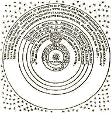
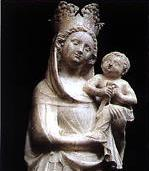
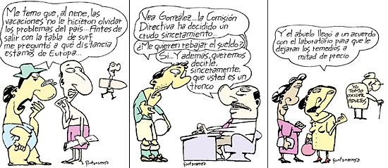

-
Las traslúcidas manos del judío

labran en la penumbra los cristales
y la tarde que muere es miedo y frío.
(Las tardes a las tardes son iguales.)
Las manos y el espacio de jacinto
que palidece en el confín del Ghetto
casi no existen para el hombre quieto
que está soñando un claro laberinto.
No lo turba la fama, ese reflejo
de sueños en el sueño de otro espejo,
ni el temeroso amor de las doncellas.
Libre de la metáfora y del mito
labra un arduo cristal: el infinito
mapa de Aquel que es todas Sus estrellas.
Spinoza - Jorge Luis Borges
Nuestro viejo conocido, el rabino Goldman (aquel que explicaba la superioridad de su caridad frente a la "caridad cristiana"), auspicia -entre otros- un recital a beneficio en Obras, con León Gieco y Fito Páez.
No dejes de faltar.
Una de las modestísimas ventajas de ser hombre de números (en lugar de hombre de letras) a la hora de leer, podría ser esta: cuando uno de esos escritores barrocos intenta apabullarme con dobles, triples o cuádrupes negaciones, la tengo fácil: procedo como algebrista y simplifico pares de negaciones.
Me explico:
En la frase -y es un ejemplo sencillo-
"Juan no carecía de esa falta de imaginación
que era proverbial en la familia...", uno puede
dudar si todo se reduce a la afirmativa "Juan tiene imaginación"
o a la negativa "Juan no tiene imaginación". Ahora bien,
tenemos tres partículas negativas (no - carecía - falta ),
simplificamos las dos primeras (dos negaciones es lo mismo
que una afirmación [*]), me quedo con una: ergo, es negativa:
Juan no tenía imaginación.
Me dirán que es fácil aclarar esos sentidos, que no hace
falta el álgebra ... pero a veces uno encuentra
expresiones más complicadas.
Y a veces también uno se distrae.
Recuerdo a Dolina, aficionado a jugar con el idioma,
que finalizaba una convocatoria a algún espectáculo propio
con la exhortación: "No deje de faltar".
Lindo -y modesto- chiste idiomático. Y ahora no estoy seguro
de que todos lo captaran.
Hace un tiempo, un vecino golpeó la puerta de mi departamento, para entregarme una convocatoria a una reunión de consorcio. Cruzamos dos palabras, y mientras yo leía la página, él me hablaba. Su discurso, alentando a la participación, terminó con un "... así que le pedimos por favor que no deje de faltar". Yo sonreí, suponiendo un chiste... pero al levantar mis ojos del texto, me encontré con la mirada severa de mi interlocutor ... ; borré pues el esbozo de sonrisa y traté de poner cara de vecino preocupado y comprometido. Creo que no me salió.
Ahora al escribir esto, se me ocurre buscar en Google.
Y encuentro
que mi vecino no está solo.
[*] Verdad es que los idioma no suelen ser tan algebraicos,
a veces tienen sus caprichos. Decir "No tengo nada",
debería ser equivalente a "Tengo algo"... pero no es así.
( El idioma inglés es más coherente en eso: "I have nothing"=
"I don't have anything"...).
Y me viene ahora a la cabeza la expresión "No es por nada",
que, por algún motivo, siempre me chocó...; si "no es por nada",
es que "es por algo", mi cabeza tiende a objetar; y sin embargo,
la otra: "no tengo nada" me resulta natural; curioso.
La frase de la semana (bueno... yo la conocí esta semana):
-
"Por una cuestión de autoestima, jamás leería un libro de autoayuda."
Totalmente de acuerdo (por fin!).
Recomiendo dar una vuelta por Fonticus Fides, el blog de Sparki, una conversa reciente yanqui, que ya mencioné alguna vez.
Uno a veces se duele y se queja de la mala calidad de alguna iconografía o arte supuestamente religioso... sobre todo el que se ve (o se oye) en las iglesias. Claro que no sólo pasa en la religión católica.
Ayer, sin ir más lejos,
entraba a mi facultad (Facultad de Ingeniería, Universidad
de Buenos Aires; pública, gratuita y laica, claro está) y
ví por enésima vez ese análogo de las estatuas de
cera del Sagrado Corazón (o del San Juan de los calvarios,
pelo largo, manos entrelazadas y ojos en alto) :
en la pared de la izquierda, arriba, el
"mural militante": ... cómo describirlo... son ocho "cuadros"
que tratan de expresar lo más chillonamente posible
el asco hacia los militares represores
(rasgos videlianos, cruza con dinosaurios, cocodrilos; colmillos
y sonrisas siniestras, verde militar, rojo sangre y negro infernal)
y la devoción hacia la salvífica clase proletaria
(puños venosos en alto, rasgos autóctonos, ceños fruncidos,
fervor masivo)...
en fin, la iconografía de la izquierda. Artísticamente, es
malísimo, y a los mismos correligionarios con algún criterio
artístico debe dolerles esto; pero,
como aquellas estatuas de cera, a las viejas devotas
(que suelen reparten estampitas/volantes a la entrada)
eso no les importa: es parte de la religión.
Y por supuesto, estoy hablando de un mural resultado de
un "concurso" oficial.
Si uno vuelve la vista a la derecha... sigue viendo la izquierda
(acaso ver algo simétrico sería peor, no digo que no...):
un coquetísimo y reciente recordatorio-homenaje (gran placa de acrílico iluminada) dedicado
a los desaparecidos de la facultad. El martirologio, digamos.
Igual que en el caso de los mártires cristianos, está fuera de lugar
preguntarse sobre su santidad "subjetiva" : no corresponde
indagar qué grado de virtud moral tuvieron,
o si acaso mataban gente, etc;
sacrilegio sería; el sólo hecho de ser víctimas de la
persecución demoníaca los canoniza automáticamente.
Conclusión: mejor no mirar para los costados. Sigo escaleras adelante,
pues y me topo con un anuncio: la Universidad de Buenos Aires,
me dicen en un afiche, premia al gran Saramago (foto en pose
de intelectual comprometido) con un Doctorado Honoris Causa.
Nuevamente, ingenuo (o hereje) sería
preguntar cuál es esa Causa.
Santos, demonios, mártires y doctores (*). Y bueno, es una universidad -es un mundo- confesional, viste ? (mantenida por el estado, eso sí; pero el estado también es confesional). Si no te gusta, ya sabés...
* Queda para otro momento el artículo principal del Credo: "Creo en la sacratísima Educación Pública", el más reverenciado de los dogmas, y que, innegablemente, tiene la exclusiva ventaja de alimentarse de sí mismo.
Entro a consultar el mail vía web, y el portal me acribilla sin piedad con sus banners consumistas-eróticos-eufóricos y estos textos, tan de ahora y de acá (calá el lenguaje y el temario, calá):
-
Premios Martín Fierro
Seguí de cerca la fiesta mayor del espectáculo nacional, conocé a los nominados y votá tu favorito al de Oro.
Blue
Conocé la banda top del pop inglés. Escuchá sus temas, mirá sus clips y participá del concurso por su último CD.
Los astros y el amor
Consultá: predicciones, la compatibilidad de parejas y las mejores uniones sexuales del zodíaco
Hoy, 8 de mayo, es la fiesta de Nuestra Señora de Luján, la patrona de Argentina.
A propósito de Max Jacob, el poeta judío, de la barra de Picasso, Apollinaire, Modigliani, etc, que se convirtió al catolicismo tras una aparición de Jesús, payaso de fondo serio, semisacristán humildísimo que no logró ser tomado muy en serio ni por los unos ni por los otros (le costó encontrar un sacerdote dispuesto a bautizarlo), que vivió en la pobreza, murió en un campo de concentración y está sepultado en el cementerio de Ivry... a propósito de esa "marioneta de Dios", me envían este poema:
- ICI REPOSE MAX JACOB
1876-1944
En Ivry son nuevas las tumbas; nueva la distribución de la muerte
Nuevos los visitantes. Todo es nuevo en Ivry.
Los fusilados hacen lugar a Max Jacob;
"Caliéntate Max. Eres un pobre judío
y tienes frío otra vez. Los caballos no te acompañaron
ni las cornetas sonaron alegremente en tus funerales."
Un pájaro tiene el nombre de Ayer. A veces canta
para los fusilados de Ivry.
Nada reluce demasiado, pero todo es nuevo
como el ala de la mañana
cuando quema los bosques de la tierra.
¿Cómo será un cementerio desconocido,
una piedra color de abadía
en el cementerio de Ivry?
Los visitantes dicen los domingos:
"Aquí yace Max Jacob, el judío que veía al Señor."
Y los parientes de los héroes desfilan como guerreros
con sus cartuchos de alhelíes que estallan sobre las tumbas.
Conversan de las vidas de los muertos, rinden graves honores
y conmemoran las batallas, las lluvias, las cosechas.
Tú te acurrucas, te hundes más en la tierra
para no molestar a tanta gloria y miedo.
Otras veces los caracoles son los visitantes.
Juegan despacio y no honran a nadie.
Saben demasiado para ocuparse de las piedras preciosas,
de los adornos de hierro, de las otras almas.
Cuando canta el pájaro de Ayer
piensas en la Rue Ravignan,
en las canciones de Morven,
en tus grandes defectos, los poemas. 
¡Ah Max! ¿Dónde están tus lamentos,
tus grotescas plegarias en Notre-Dame-de-Sion?
Nada de aquello sirve para esta tumba nueva
y debes esperar entre tu bella túnica de tierra.
Los otros están antes que la tristeza de tus ojos.
Sin embargo tú sabes que la Virgen ha reído
con tu extraño sombrero,
con tu cabeza sonrosada de asno malicioso;
tú sabes que Nuestra Señora ha recogido
la joya inmaculada de tu bautismo, y eso basta.
La Santa Virgen te conoce, Max, y ha preguntado
por su niño de Ivry.
Los visitantes del domingo vuelven.
En el día del Señor no descansan;
no descansan sus almas atormentadas
por condecoraciones, himnos y folletines.
Se cuadran ante las palmas y hacen callar a los niños
que entre las tumbas ríen
enloquecidos con su juguete de domingo.
Piensan en grandes banderas subterráneas,
en la marcha de los héroes por el yeso y el cuarzo.
Hablan de un paraíso sepultado, del damasco de oro
que arde en el centro de la tierra
donde los muertos juegan vestidos de emperadores.
Ellos saben y hablan con voz grave
nombrando los elementos aéreos y sumergidos,
los clavos del silencio, el río de los metales,
las sales de tiniebla donde viven los muertos.
Un niño mira una mariposa y la sigue. Es tu tumba.
Lo detienen los hombres de la tarde
y con solemnes maneras lo reprenden:
"Deja en paz a Max Jacob, el judío
que vio la sonrisa del Señor y su manto celeste."
Y luego restituyen el orden de las coronas confundidas
con el gesto severo de los héroes.
¿Cómo será un cementerio perdido
en el corazón de un poema?
¿Cómo será esa voz que me ha dicho
en la garganta oscura del agua de las tumbas:
"... Y héme aquí, yo, pobre judío viejo y estúpido
en medio de esa cohorte de cristianos
con alma de marfil!"
Es la misa del frío en Saint-Benoît-sur-Loire.
Haces sonar la campanilla, ¡oh Buen Ladrón!,
y la harina del día relumbra en los altares.
Las cuevas de la muerte son estrellas con leones ardiendo
donde se quema el polvo de los Jueces.
Y tienes frío y tiemblas.
iCómo fulgura el carro de los ángeles, cómo brillan
las barbas de los santos, hermosas como lanzas!
El niño de Ivry tiene miedo.
"Ah Max, qué tonto eres", dice la Santa Virgen.
Alfonso Sola González - "Tres Poemas"
Buenos Aires. Carmina. 1958
Me pregunta un lector por la etimología de la palabra "resurrección".
No tengo la menor idea. Pero con la ayuda de Google, podemos jugar al filólogo aficionado. Esto es lo que saqué en limpio ... (bah, limpio es mucho decir... tal vez algún hombre de letras pueda corregir o aportar ):
Parece que la palabra actual resurrección viene del latín tardío "resurrectio" , que vendría del latín clásico "resurrectus", que a su vez vendría a ser un participio pasado de "re-surgere" (re-surgir ), levantarse de nuevo. A su vez, "surgere" (surgir, en la acepción de "levantarse") vendría de "sub-regere": sub = "de abajo" , regere = "ir en línea recta", verbo derivado de la partícula "reg", raíz antigua que tendría ese significado... (de ahí derivarían "regla/recta", "right", y un montón de cosas más).
- Hermanita querida, no seas una chiquilla triste pensando que no te comprenden, que te juzgan mal, que te olvidan; sino ríete de todo el mundo procurando actuar como las demás,
o, mejor, tratándote a ti misma como [dices que] te tratan las demás, es decir, olvidándote de todo lo que no es Jesús y olvidándote a ti misma por su amor...
Me gusta que al Chango Farías Gómez se le haya dado por cantar un tanguito; y que precisamente se trate de "Mi vieja viola", un tango no muy conocido y muy lindo.
Acá está la letra con una versión -no es de lo mejor- con la orquesta de Basso; y acá están los acordes (la cantó Zitarrosa ?? no tenía idea, debe estar linda la versión...).
Es un diálogo con la viola (guitarra) abandonada, de sus lejanos tiempos de cantor:
- ... Si las vueltas de la vida me componen
y la suerte me arrempuja a encarrilar,
yo te juro que te cambio los bordones,
me rechiflo del escabio
y te vuelvo a hacer sonar...
Recomienzan los conciertos gratuitos de música clásica de los miércoles al mediodía en el Gran Rex. Hoy, cello con piano (sólo conozo la suite 3 para cello solo de Bach, muy linda).
De los libros que compré en la Feria:
No está mal "Siete escritores conversos" de Pujol; biografías breves y sencillas, nada hagiográficas; bien la de Bloy (suelen dejarme disconforme las biografías-comentarios sobre Bloy, sobre todo si son en tono defensivo); y me interesó particularmente la de Max Jacob, quien me era totalmente desconocido.
El libro de Guitton (en colaboración) "Dios y la Ciencia"
me resultó -leído a vuelo de pájaro- francamente insoportable;
defecto de mera forma, tal vez (estilo de diálogo,
dos físicos con Guitton en el papel de lego filósofo...)
pero a tal punto malogrado que me torna imposible
sacarle algo de jugo ... si es que lo tiene.
Decepción; y le estaba sacando unos puntos a Guitton,
sobre todo considerando que, según creí recordar
al comprar el libro, él
lo ponía -en su "Testamento filosófico"-
como una de sus obras preferidas y se lamentaba
de que hubiera tenido poco éxito en comparación con
algún otro folleto de menos nivel... Pero resulta que
mi memoria me engañó. Voy a buscar ese texto,
y encuentro que es al revés: Guitton se duele
de que este folleto vulgarizador haya
tenido tanto éxito y que en cambio su obra
predilecta (ahora no recuerdo cuál) haya pasado
casi desapercibida. Bueno, me alegra estar
más de acuerdo con Guitton que con su público.
Acá
hay una recensión -crítica y sensata- del librito.
De paso: estuve releyendo su
"Testamento filosófico". Cómo me gusta ese libro! No es para
cualquiera, alguno encontrará el humor dudoso y
el conjunto egolátrico y chocante ... yo no. Guitton relata su propia
muerte (en los brazos de Pablo VI, antecedida
de un encuentro con el diablo, con Pascal y con Bergson);
asiste a su entierro (mientras habla con El Greco, De Gaulle,
Sócrates, Blondel, su esposa, Dante y el diablo de nuevo)
y al juicio (en el cual le dan una mano Teresita de Lisieux
y Mitterrand). Muy sabroso, y conmovedor.
Lo escribió a los 95 años
- y murió (de verdad) a los 98. Un tipo que envejece
tan bien, se gana automáticamente todo mi respeto.
Tom en Disputations trata el tema de las canonizaciones; cita al comienzo las dos típicas objeciones que unos cuantos católicos hacen al Papa actual:
- que ha canonizado a demasiada gente
- que hay demasiados pocos -en proporción- santos laicos: la gran mayoría son clérigos o monjas.
Tom encuentra irrazonables estas críticas, sobre todo la primera.
Yo no estoy tan seguro; es decir, creo que
aunque tal vez no sean justas, no son irrazonables
y merecen ser consiredas con más detenimiento... hasta me dan ganas
de jugar el rol del "abogado del diablo", diga
que no tengo tiempo... Pero tal vez otro día....
Casamientos sin stress: una empresaria organiza fiestas de boda "sin distinción de religiones" ; en efecto, la religión no importa en absoluto (a quién se le ocurre...! ), lo que importa es el deseo de ser original:
-
... cuando tuve que organizar mi casamiento... quise hacer algo diferente y se me ocurrió que la celebración fuera por la tarde con un té. Eso llamó la atención de la gente, que después me empezó a pedir ayuda...
...
La novia argentina está más original y rebelde que nunca y quiere probar cosas nuevas. Por eso organizamos eventos en donde pusimos toros mecánicos o máquinas en las que las personas entraban y grababan en soledad un mensaje para los novios...
...
la empresa se ocupa de todos los detalles y ayuda a los novios a romper con las estructuras...
...
La empresaria termina diciendo:
-
Estoy esperando afianzar un poco más la empresa para luego abrir algún instituto para wedding planners. Quiero hacer lo mismo que vi en Estados Unidos...
-
Creer que las cosas son lo que parecen, he ahí la más trivial de las ilusiones;
ilusión universal que se ve confirmada, día tras día, por la impostura tenaz de todos nuestros sentidos.
Sólo la muerte nos desengañará. En el instante mismo en que nos sea revelada nuestra identidad, tan perfectamente desconocida para nosotros mismos, inconcebibles abismos, dentro y fuera de nosotros, se descubrirán ante nuestros ojos verdaderos. Los hombres, las cosas, los sucesos, nos serán finalmente manifestados y cada uno podrá comprobar la afirmación de aquel místico que dijo que desde la Caída el género humano entero se sumió en un sueño profundo.
Prodigioso sopor de las generaciones, con las incoherencias y deformaciones infinitas de todo sueño. Somos durmientes atestados de imágenes desdibujadas del Paraíso perdido, mendigos ciegos en el umbral de un palacio sublime de puertas clausuradas. No sólo no logramos vernos unos a otros, sino que ni siquiera podemos distinguir por el sonido de la voz a nuestro prójimo.
Se nos dice: he ahí a tu hermano. Ah, Señor! ¿pero cómo podría reconocerlo en medio de esta multitud indiscernible y cómo sabría que es mi semejante, si está hecho a tu imagen, y yo mismo desconozco mi propio rostro? A la espera de que te plazca despertarme, no cuento más que con mis sueños y casi siempre son pesadillas. ...
León Bloy - En las tinieblas
Ya que mentamos a Fontanarrosa, van tres chistecitos.

Y, mejor aún -pero sólo para los que gustan de humor negro ... y sucio- un episodio del gran Boogie, el aceitoso.